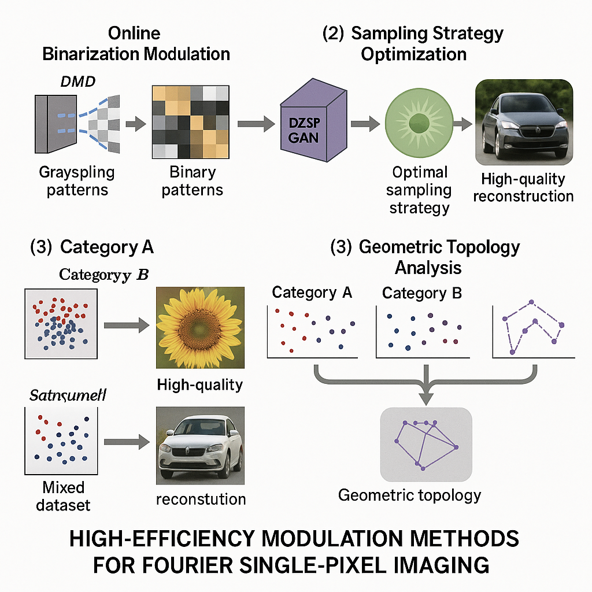

突破传统成像限制，实现高效率、高质量的傅里叶单像素成像技术

本项目针对传统傅里叶单像素成像（FSPI）技术面临的成像帧频低、图像质量差等关键挑战，基于深度学习算法开发了三种创新方法，显著提升了FSPI的性能表现。研究解决了低采样率下的图像重构质量问题，实现了高效率、高质量的傅里叶单像素成像。
开发基于深度学习的高效率调制方法，解决传统FSPI技术的性能瓶颈，实现快速、高质量的单像素成像。
结合生成对抗网络、采样策略优化和几何拓扑分析，构建端到端的深度学习成像系统。
适用于遥感成像、激光雷达、实时光学成像等需要高速、高质量成像的应用领域。
将灰度傅里叶基模式转换为二值模式，显著提高DMD刷新率，通过生成对抗网络（F2SPI-GAN）在低采样率下实现高质量重构。
设计S2O-FSPI网络，通过端到端训练自动学习和优化采样策略，结合空间注意力机制聚焦信息丰富的频域区域。
分析不同目标场景类别的最优采样策略几何拓扑结构，发现相似数据类别具有相似的几何拓扑特征。
采用编码器-解码器结构，集成注意力机制，通过生成对抗网络提高低采样率下的重构质量。网络能够有效抑制振铃效应，在1-3%采样率下实现高质量图像重构。
技术特点：端到端训练、注意力机制、振铃效应抑制、低采样率适应
设计单阶段FSPI重构网络，包含采样策略优化模块和重构模块。通过联合训练两个模块，同时获得高质量重构结果和高效采样策略，避免传统经验主义采样策略的资源浪费。
优化策略：空间注意力机制、自动学习采样、频域信息聚焦、资源效率提升
通过在线二值化将灰度傅里叶基模式转换为二值模式，显著提高DMD刷新率。采用阈值优化算法，在保证重构质量的前提下实现光场空间分布的高质量快速调制。
技术优势：DMD刷新率提升、内存占用减少、实时处理能力、重构质量保持
在汽车数据集上训练网络模型，实现低采样率下的高质量重构，验证方法的有效性和泛化能力。
应用于帆船、鸟类等自然场景图像重构，成功解决低采样率下的振铃效应问题。
以"熊"娃娃模型作为目标场景，在暗室条件下验证方法的有效性，与多种传统方法进行对比。
在1-3%低采样率下实现高质量图像重构，有效抑制振铃效应，重构质量显著优于传统方法。实验验证显示，所提方法在相同采样率下总能获得最高的PSNR和SSIM指标。
| 方法 | 数据采集时间 | 傅里叶逆变换 | 重构算法时间 | 总时间 |
|---|---|---|---|---|
| SPDS | 1.311s | 0.004s | - | 1.314s |
| SGDS | 7.864s | 0.004s | - | 7.868s |
| DGA | 2.621s | 0.004s | - | 2.625s |
| 传统FSPI | 9.039s | 0.004s | 1s | 9.043s |
| 我们的方法 | 1.311s | 0.004s | 0.014s | 1.329s |
本项目成功构建了一套完整的基于深度学习的傅里叶单像素成像高效率调制系统，通过创新的算法设计和网络架构，在成像速度、重构质量和采样效率等方面都取得了显著突破。系统成功解决了传统FSPI技术在低采样率下的性能瓶颈问题。
主要成果：重构效率提升6.8倍、低采样率适应（1-3%）、振铃效应抑制、成功应用于多种场景
项目的主要技术创新包括：F2SPI-GAN网络架构设计、采样策略自动优化、二值化调制技术、几何拓扑分析等。这些创新使得FSPI技术在保持高精度的同时，实现了显著的性能提升和效率优化。
创新亮点：深度学习集成、采样策略优化、二值化调制、几何拓扑分析、端到端训练
未来计划进一步优化网络架构，探索更先进的深度学习模型在FSPI中的应用，提升系统在更复杂环境下的鲁棒性。同时，计划扩展应用场景，包括医疗影像、工业检测、安全监控等领域，为更多行业提供高性能成像解决方案。
发展方向：网络架构优化、多场景应用、鲁棒性提升、行业扩展、实时处理能力增强
重构效率提升6.8倍，显著降低成像时间
在1-3%采样率下实现高质量重构
有效抑制传统方法的振铃效应问题
自动学习最优采样策略，提高资源利用效率
深入分析采样策略的几何拓扑结构
完整的深度学习训练和推理流程